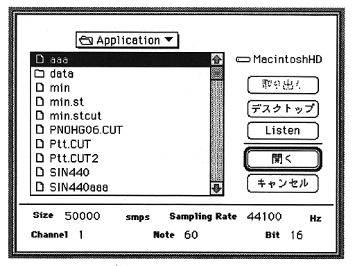

Listen
The sound of the selected file is played on the Macintosh.
OK
Opens the selected file.
Size
Displays the number of data samples.
Sampling rate
Displays the sampling frequency.
Channel
Displays the number of channels.
Note
Displays the frequency as a MIDI note number.
Bit
Displays the number of bits of wave data.